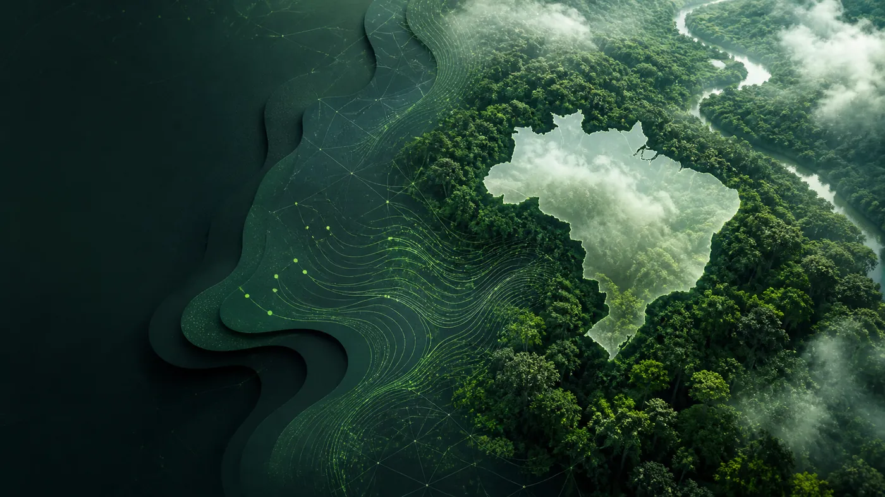

← Todos os projetos
02 / PLATAFORMA
Eco — Créditos de Carbono
Transparência para conectar preservação e mercado.
Product Design · Web B2B

A Eco organiza a negociação de créditos de carbono em uma experiência que aproxima empresas, projetos e informações de mercado.
- Desafio
- Tornar etapas e dados de créditos de carbono compreensíveis.
- Minha contribuição
- Jornada de consulta, simulação e gestão da plataforma.
- Limite da evidência
- As métricas mostradas nas telas são dados da interface, sem impacto validado.
01 / DECISÃO
Do impacto à ação.
Organizei a jornada em apresentação, negociação, simulação e consulta. Assim, compradores e vendedores encontram as informações necessárias em cada etapa.

02 / INTERFACE
Informação para decidir.
As telas de gestão reúnem créditos, relatórios e transações. Os indicadores exibidos nas capturas pertencem à interface do projeto; não são apresentados aqui como impacto comprovado do design.